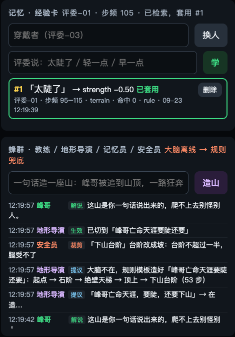
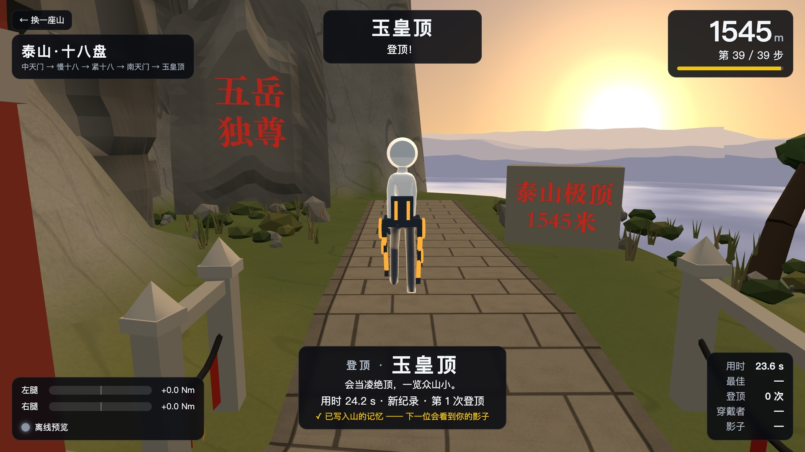

穿上量产的消费级髋外骨骼原地迈步，屏幕里的你在爬山，坡和台阶变成腿上按步态相位打的力。你说一句「太陡了」，它当场改、记住、传给下一个人；再说一句话，Claude 现场造一座山，安全员裁剪后马上能爬。
队友帮你穿好。按住手柄右扳机（R2）才有力，松手立刻归零。开场可以先拿摇杆「推」队友的腿走两步（共驾，被推的只能是队友）。
大屏上的你在爬赛博东京：红灯走也不前进、腿被轻轻往回拉；上天桥台阶，每一步刚落脚髋被推一下、抬腿再帮一下。
「太陡了」→ 当场变轻，存成经验卡；删卡立刻回到原样。下一个步频相近的人，走满 6 步自动继承。
随口说一座山 → 地形导演出路线 → 安全员裁剪 → 马上能爬。登顶时峰哥解说员来一句「这是个好事儿啊」。
红色 = 能碰到人身上的那一道：Guard 在最底层，安全员在 Agent 层，两道都是确定的代码。大模型只出「提议」，脑子整个拔掉，游戏、腿上的力、经验卡照常工作。
峰哥亡命天涯，要陡，还要下山」→ 地形导演出 53 步路线 → 安全员「『下山台阶』台阶改成坡：台阶不超过一半，腿受不了」→ 切过去马上能爬。
仪表盘截图：经验卡 #1（已套用）+ 蜂群时间线。右上「大脑离线 → 规则兜底」照实显示。

登顶这一圈会成为下一位的影子（离线预览画面，用时是示例数）。
| 真机（9/22） | 串口握手 PING → VERSION → ENABLE；183 Hz 数据流；力矩指令被接受（OK,T 323 条）；控制循环最大间隔 12 ms、一拍 <1 ms；看门狗触发两次，都按设计断使能 |
|---|---|
| 回放（真机录制） | 穿戴坐站的假步态周期 13 → 0；走动段步子接住率 0.25 → 0.44（游戏里会一顿一顿）；红灯停步到放行中位 2.2 s；12 段录制全栈回放 0 次断使能 |
| 模拟 / 单测 | 5 种脉冲形状核对全过、27 组参数边界 0 组不过；11 种故障注入全过；蜂群：安全员裁剪 / 否决 / 急停全否，恶意路线草稿被裁成能走的山，断网兜底全通（不打真 Claude）；游戏 1080p 50–58 fps（开发机） |
| 待 9/24 上午实测 | 力矩方向（「正 = 髋伸展」目前是数据推断）；脉冲穿在身上的手感；脚跟着地在相位的哪里；原地踏步稳不稳；蒙眼二选一（≥9/10 才说「能分辨坡度」）；陌生人穿脱时间；展位 MacBook 帧率；Claude 实连的准确率、造山质量和延迟 |
| 哪些是 Claude | 教练、地形导演，还有峰哥解说员的解说词，由 Claude 来写；断网或 Claude 不可用时分别换成规则表、关键词模板、内置语录，界面标 claude / rule / canned。记忆员是代码，安全员是硬代码，永远不是大模型 |
| 峰哥素材 | 照片（化身贴脸 + 大屏头像）来自 talk-to-fengge-live（MIT），口吻节选自 feng-ge-skill（MIT）；声音是 MiniMax 复刻的音色，参考音频是 talk-to-fengge（Apache-2.0）里约 45 秒的公开直播片段。兜底语录已预生成，断网也有峰哥音色。合成音频只存本机、不公开发布。许可证管不了真人的肖像和声音，展示前当面征得峰哥本人同意 |